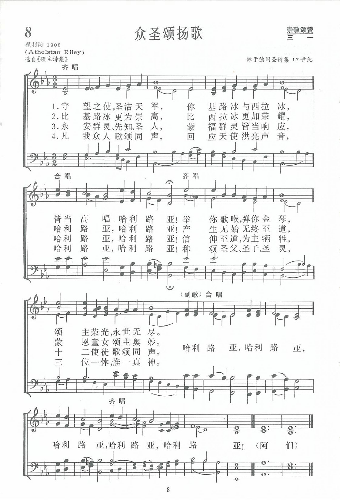

|
|
|
|
1 Ye watchers and ye holy ones, Refrain: 2 O higher than the cherubim, 3 Respond, ye souls in endless rest, 4 O friends, in gladness let us sing, |
第008首《众圣颂扬歌》 1.守望之使 圣洁天军 你基路冰与西拉冰 皆当高唱哈利路亚 举你歌喉 弹你金琴 颂主荣光 永世无尽 哈利路亚 哈利路亚 哈利路亚 哈利路亚 哈利路亚 2.比基路冰更为崇高 比西拉冰更加荣耀 哈利路亚 哈利路亚 产生无始无终至道 蒙恩童女颂主奥妙 3.永安群灵先知圣人 蒙福群灵皆当响应 哈利路亚 哈利路亚 信仰至道 为主牺牲 十二使徒歌颂同声 4.凡我众人歌颂同声 回应天使洪亮声音 哈利路亚 哈利路亚 称颂圣父圣子圣灵 三位一体 惟一真神 阿们
|
|
https://www.zanmeishige.com/tab/13639.html?songbook=1&index=8

|
|
|
|
|


- Ye Watchers and Ye Holy Ones · OCP Session Choir https://youtu.be/5PTCK2PGupc
| Text: | Ye Watchers and Ye Holy Ones |
| Author: | John A. Riley, 1848-1945 |
| Tune: | LASST UNS ERFREUEN |
| Arranger: | Randall DeBruyn, b. 1947 |
| Short Name: | Athelstan Riley |
| Full Name: | Riley, Athelstan, 1858-1945 |
| Birth Year: | 1858 |
| Death Year: | 1945 |
Riley, John
Athelstan Laurie, M.A., s. of John Riley, Mytholmroyd, Yorks, was
born in London, Aug. 10, 1858, and educated at Eton and at Pembroke College,
Oxford (B.A. 1881, M.A. 1883). He has been since 1892 a member of the House
of Laymen of the Province of Canterbury. He was one of the compilers of The
English Hymnal, 1906, and contributed to it seven translations from the
Latin (34, 185, 193, 195, 213, 242, 321, with No. 97 previously published),
and one from the Greek, beginning, "What sweet of life endureth," from Iiola
rod fiiov, p. 899, i., and the following originals:—
1. Come, let us join the Church above. Martyrs.
2. Saints of God! Lo, Jesu’s people. St.
Bartholomew. The initials of the lines form the acrostic Saint
Bartholomew; it is really a general hymn for Apostles.
3. Ye watchers and ye holy ones. Universal
Praise to God. [Rev. James Mearns, M.A.]
--John Julian, Dictionary of Hymnology, New Supplement (1907)
The opening stanza of this hymn echoes Psalm 103, “Bless the Lord, O you his angels, you mighty ones who do his word, obeying the voice of his word! Bless the Lord, all his hosts, his ministers, who do his will! Bless the Lord, all his works, in all places of his dominion. Bless the Lord, O my soul!” (Psalm 103:20-22, ESV) This hymn is based, in part, on the Te Deum laudamus, an ancient hymn that is still used in both the Eastern and Western branches of the Church. As this hymn is sung, contemplate the vastness of creation as it worships God continually, in heaven and on earth, past and present, including angels and Christians of all traditions.
Text:
J. Athelstan Riley wrote this text in 1906 to the tune LASST UNS ERFREUEN for the English Hymnal, of which he was an editor. Sources for the text include two ancient texts used in the Eastern church, Te Deum laudamus and Theotokion (“Hymn of Mary;” used in choir offices of the Orthodox Church). Riley's special interest in the Eastern church is reflected in the text, especially the first two stanzas, which call upon the nine different orders of angels and on the Virgin Mary (“Thou bearer of th' eternal Word”) to praise the Lord. The Te Deum laudamus (We praise thee, O God) is an ancient hymn that belongs to both Eastern and Western churches, and it is the basis for part of the first stanza, and for the third and fourth stanzas.
Tune:
This hymn is always sung to the tune for which it was written, LASST UNS ERFREUEN; it is also the original English text for that tune. The tune title comes from its original German text, with which it was paired in a Catholic songbook from Cologne, Ausserlesene Catholische Geistliche Kirchengesänge (1623). This tune has the same opening phrase and similar rhythmic patterns to GENEVAN 68. The modern version of the tune is by Ralph Vaughan Williams, who set it for the English Hymnal in 1906.
One place in the tune that is subject to tradition is the length of the last syllable in the middle “Alleluia;” it is sometimes sung as written, and sometimes lengthened by a fermata. The advantage of using the fermata is that it gives the congregation a place to take a good breath after the relatively high register of the preceding phrase. Congregations will also likely try to cut short the value of the penultimate note of the song, so the leader and accompanist should clearly indicate when to land on the final note.
When/Why/How:
This hymn is a call to praise, suitable for an opening hymn. Try singing in unison for most of the text, except for the “Alleluia” in the middle of the verse and for the refrain, where four-part harmony adds to the feeling of jubilation. Another choice would be to add brass or other instruments, either just on the “Alleluias,” or to reinforce the entire melody, especially if no organ is available.
This tune lends itself well to a range of moods in instrumental arrangement; some of the variety that exists is due to the diversity of texts that are sung to it. A comparatively gentle (though moderately difficult) instrumental arrangement of LASST UNS ERFREUEN for violin and piano in “Hymns to the Creator” by Duane Funderburk would work well as a prelude. A glorious organ arrangement that is probably more suited to the grand theme of this particular text is “Festival Alleluia” from “Two Festive Hymn Settings” by Dan Miller. One setting of this tune that sets two texts is “Ye Watchers and Ye Holy Ones” by Charles Thatcher (the other text is the well-known “All Creatures of Our God and King”). This arrangement is for organ, two trumpets, and choir, with optional congregational singing.
Tiffany Shomsky,
Hymnary.org
第8首 众圣颂扬歌 Ye watchers and ye holy ones
经文：“愿你的祭司披上公义，愿你的圣民欢呼”(诗132：9)
这首诗是英国圣公会平信徒赖利(A.Riley，1858—1945)写的。赖利于牛津大学毕业后，壮游远东伊朗(古波斯)、土耳其、库尔德斯坦(属今伊拉克、古巴比伦)等地，回国后以所辑材料写文章投寄杂志，介绍东正教各教派的情况与历史，还著有《修道士的山》一书(1887年出版)等。他是1906年英国赞美诗的编辑委员之一，为该诗投寄创作圣诗三首，从拉丁文翻译的圣诗七首。《众圣颂扬歌》是他应编辑之请写成。
赖利对东正教的深厚感情， 使他在诗内反映出希腊东正教所用的词句，如第二节所说“比基路冰更为崇高，比西拉冰更加荣耀，产生无始无终至道，蒙福童女颂主奥妙”，便是东正教尊崇圣母马利亚的词句。
这首诗所用的调名为《LASS UNS ERFREUEN》，乃在德国科隆1623年所出版德国赞美诗中复活节圣诗的第一首。据传是出自德国民歌。所以英文又称为《复活节哈利路亚(EASTER ALLELUIA)》。
曲调是单声部齐唱，但所有的哈利路亚都是四部合唱，唱起来有此起彼伏的哈利路亚声不断之感，又似钟声绵绵传至远方。
乐曲和声优美雄壮，是英国近代最有名的作曲家、宗教音乐家威廉斯(V.Williams，1872一1958)①配以和声。他是一位对英国民族音乐造诣颇深的作曲家，写过许多宗教音乐，编过《赞美诗集》，其名著《民族音乐论》已译成中文，1957年在上海出版。
① 《新编》内有三位威廉斯。请参阅作者索引。
History of Hymns: "Ye Watchers and Ye Holy Ones"
"Ye Watchers and Ye Holy Ones"
John Athelstan Riley
The UM Hymnal, No. 90
Ye watchers and ye holy ones,
Bright seraphs cherubim, and thrones
Raise the glad strain, Alleluia!
Cry out, dominions, princedoms, powers,
Virtues, archangels, angels’ choirs: Alleluia!
John Athelstan Riley (1858-1945) lived a long and well-traveled life. A
native of London with an education at Eton and Pembroke College, Cambridge,
his traveled to Middle Eastern countries including Persia, Turkey and
Kurdistan to study the worship of the Eastern Orthodox Christian churches.
Those experiences influenced his scholarship and our hymn.
The results of Riley’s research appeared in many articles and the book Athos,
or the Mountain of the Monks (1887).
Riley participated fully in the publication of the landmark English
Hymnal (1906), seen as an alternative to the more staid Hymns
Ancient and Modern (first edition, 1861). The changes in
the English
Hymnal from its predecessor were not well-received
initially, but many were won over by Ralph Vaughan Williams’ excellent
contributions as musical editor and by Riley’s many lectures on the
collection with an accompanying group of singers.
In spite of the competition between the two books, there was an important
link between Riley and John Mason Neale (1818-1866), editor of Hymns
Ancient and Modern. Both loved the historical liturgies of the
Christian church, including those of the Orthodox tradition.
As English hymnologist Richard Watson points out, “[Riley] was a successor
to John Mason Neale in his interest in the Eastern Church, and the hymn
draws upon his knowledge of early theology, especially the thinking about
angels.”
Professor Watson notes that Riley incorporated the concepts proposed by a
sixth-century treatise on “a heavenly structure of threes, descending in
order from the central three, the Holy Trinity.” Indeed Riley masterfully
piles up three sets of threes in the first stanza: 1) Seraphim, Cherubim and
Thrones; 2) Dominations, Virtues and Powers; 3) Principalities, Archangels
and Angels.
This treatise was once believed to be the work of Dionysius the Areopagite,
a convert of the Apostle Paul during his visit to Athens (see Acts 17:34).
However, it is now thought to have been written much later, and the author
is referred to as Pseudo-Dionysius. The treatise was very influential on
medieval concepts of the structure of heaven and the theology of angels.
Following a pattern seen in other early hymns such as “Of the Father’s Love
Begotten,” the witness of heavenly beings spreads to Earth via the
Incarnation—“Thou Bearer of the eternal Word” (stanza two). The response on
Earth resounds in stanza three with the affirmation of “Patriarchs and
Prophets” and the “Holy Twelve” and “Martyrs strong” who are joined by “All
Saints triumphant.” The final doxological stanza concludes with an
affirmation of the Trinity as the cosmos joins in a glad song of “supernal
anthems.”
Professor Watson suggests that the hymn is the sonic equivalent of a
Renaissance painting where “the eye can think of the orders of the angels
and saints, rank upon rank.” Raphael’s “The Crowning of the Virgin”
(1502-1503) displays the connection between the sonic and visual symbolism
of heaven and earth. Undoubtedly, Riley was influenced by his study of Greek
liturgy and the Theotokion, “Hymn to the Mother of God.”
The hymn was first matched to the tune LASST UNS ERFREUEN (“Let us
rejoice”), a German tune from the 17th century, by Ralph Vaughan Williams
for the English
Hymnal (1906). For over 100 years, this pairing of text
and tune, as well as Vaughan Williams’ arrangement, has been standard for
many hymnals.
Dr. Hawn is professor of sacred music at Perkins School of Theology, SMU.
https://www.umcdiscipleship.org/resources/history-of-hymns-ye-watchers-and-ye-holy-ones
Athelstan Riley 1858 – 1945


{kind=link}
https://en.wikipedia.org/wiki/Athelstan_Riley